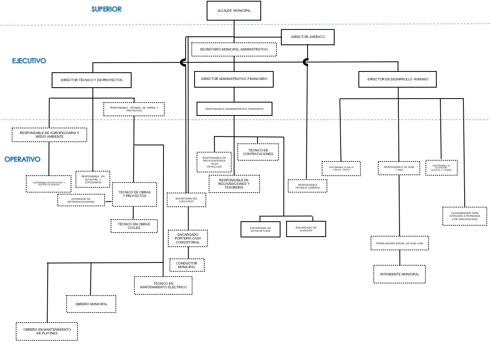

Inicio
El municipio de Huarina fue creado el 15 de julio de 2005
Alcalde
El Gobierno Autonomo Municipal de Huarina, a la cabeza del Alcalde Municipal el Hno. Wilson Mamani Ali
Misión y Visión
La misión y visión está enfocada en el análisis del enfoque político, traducido en el marco estratégico del PEI. En este sentido, estas declaraciones estratégicas, se encuentran alineadas con los objetivos estratégicos determinados.
Ubicación
Huarina es una localidad y municipio de Bolivia, ubicado en la provincia de Omasuyos al oeste del departamento de La Paz. Se encuentra ubicado a 70 km de la ciudad de La Paz, capital del departamento, y se halla a 3.840 metros sobre el nivel del mar.
Organigrama

Sub Alcaldias
- Sub Alcaldia Copancaja
- Sub Alcaldia Coromata baja
- Sub Alcaldia Coromata Alta
Concejales


Servicios Municipales
Servicios que ofrece el municipio
-
DIRECTOR JURIDICO
Responsable Tecnico Juridico
-
DIRECTOR DE DESARROLLO HUMANO
Los cuales estan
- Responsable de Salud Pública - SICOFS
- Responsable de SLIM y DNA
- Trabajadora Social de SLIM y DNA
- Intendente Municipal
- Responsable de educación, deporte y turismo
- Coordinador para atención a personas con discapacidad
-
DIRECTOR TÉCNICO Y DE PROYECTOS.
- Responsable de agropecuaria y medio ambiente
- Responsable en Catastro y Topografía
- Responsable Técnico de obras y proyectos
- Técnico de obras y proyectos
- Operador de retroexcavadora
- Técnico en obras civiles
- Técnico en mantenimiento eléctrico
- Obrero Municipal
- Obrero en mantenimiento de plantines
-
DIRECTOR ADMINISTRATIVO FINANCIERO
- Responsable administrativo financiero
- Responsable de Recaudaciones – RUAT vehículos
- Técnico en contrataciones
- Responsable de Recaudaciones y Tesorería
- Encargado de activos fijos
- Encargado de Almacén
-
Gracias
Informacion Turistica
Virgen del Rosario
Festividad Virgen María del Rosario los días: 30 de septiembre 1,2 y 3 de octubre
rocosas petrificados (Homero Simpson),
La escultura milenaria donde se encuentra Homero Simpson
Centro Gastronomico
los platos típicos del lago: entre ellas están: Wallaque: es un plato delicioso que contiene papa, carachi,koa, chuño, ají, cebolla, sal y una rica sopa de pescado. Pejerey, Trucha, Pejerey pequeño, Mauri e Ispi se puede servir en la sopa o frito con mote, chuño, yuca, fideo, depende, pero acá en Huarina los sirven con arroz, papa y ahugadito
Historia de Huarina
Huarina es una población altiplánica, milenaria; asentada a orillas del lago Titicaca. Guarda los tesoros geológicos, paleontológicos, arqueológicos e históricos muy singulares Actualmente es un pueblo moderno que tiene recursos geográficos muy valiosos, que merece la atención de los propios y extraños, enaltecer su identidad en el tiempo, pasando por las culturas Wiñaymarka, Uru, Huari, Incásica y cristiana. En especial su cosmovisión está enriquecida por los mitos y leyendas, los sitios neo históricos, nexos sanguíneos, tradición y folclore, educación, deporte, comercio y religión, los que son muy originales.
Cerro de Turriturrini
Sobre las montañas de la cordillera de los Andes en la celebración del Año Nuevo Andino, una festividad tradicional en Bolivia que se remonta a los antiguos pueblos prehispánicos y que celebra, en coincidencia con el solsticio de invierno, el regreso del astro sol.
Origen del Nombre
El nombre de Huarina proviene de “WARINI” que antiguamente en las faldas del cerro del mismo nombre habían existido los WARIS en abundancia por esa razón los INCAS lo denominaron “WARINI”. Con el tiempo esta palabra fue modernizada, castellanizada y fundada el 3 de octubre de 1547 por el INCA Informador PACHACUTEC YUPANQUI el noveno INCA con el nombre de HUARINA.